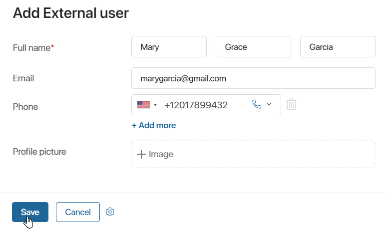

When you’ve finished setting up a portal and its pages, you need to activate the named license package for external users. To do that, contact the sales rep you worked with when purchasing the system.
After that, add and invite external users to the system. You can fill in user data manually or import accounts from another system.
Please note that it is not necessary to add and invite manually users who sign in to the portal using SAML or through an external service with automatic registration enabled. It is enough to pass a link to the portal page to such users.
To add a user and invite them to the portal, follow these steps:
- Open the System apps workspace.
- Go to the External users page and click +External user in the upper right corner.
- In the window that opens, specify the required user information. By default, only the Full name field is required. All other fields can be filled in later.
- Click the Save button to complete the settings.

- After adding the user to the system, you need to generate a personal link that lets the user access the portal’s pages. To do this, go to the portal page and click +Invite a new user.
- In the window that opens, select the user you created by clicking the magnifying glass icon or add a new one.
- Open the invitation parameters:

- Without contact data confirmation. Select the option if you specified authorization data when creating an external user. It can be email or phone number if authentication with phone number is enabled for the portal. Then, when clicking the invitation link, the user will immediately be able to fill in personal data and set a password. If the option is not selected, they need to confirm the email or phone number using a one-time code.
- Update the link created earlier. This option allows you to generate a new invite link. The previous link will become invalid.
- After you fill out the form, click Get link, copy the invite link, and send it to the user.
Grant access to the portal
The personal invite link for an external user has no expiration date. The link allows the user to access only the portal he or she has been invited to. If the portal’s status is changed to Inactive, the user won’t be able to view its pages.
Grant access to several portals
You can add external users and manage their access to a portal using a script. This allows you to grant one user access to several portals. To do that, implement the following methods in the script used to create and manage an external user:
async function add(): Promise<void> {
let profile = await Global.ns._system_catalogs.app._user_profiles.search().first();
if (profile) {
await Namespace.portal.addProfile(profile);
}
}
async function del(): Promise<void> {
let profile = await Global.ns._system_catalogs.app._user_profiles.search().first();
if (profile) {
await Namespace.portal.removeProfile(profile);
}
}
Found a typo? Select it and press Ctrl+Enter to send us feedback